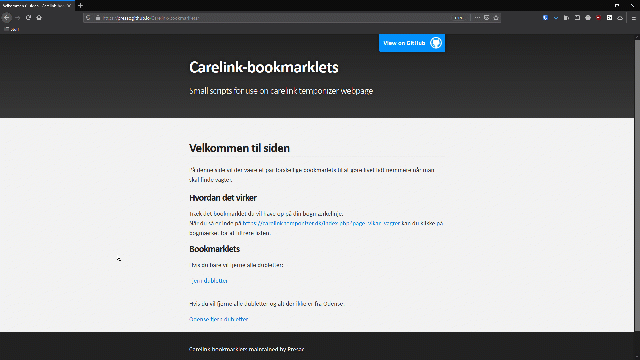
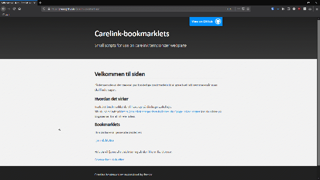

Velkommen til siden
På denne side vil der være et par forskellige bookmarlets til at gøre livet lidt nemmere når man skal finde vagter.
Hvordan det virker
Træk det bookmarklet du vil have op på din bogmærkelinje.

Når du så er inde på https://carelink.temponizer.dk/index.php?page=vikar_vagter kan du klikke på bogmærket for at filtrere listen.

Når du så er inde på https://carelink.temponizer.dk/index.php?page=vikar_vagter kan du klikke på bogmærket for at filtrere listen.

Bookmarklets
Hvis du bare vil fjerne alle dubletter:
Fjern dubletterHvis du vil fjerne alle dubletter og alt der ikke er fra Odense:
Odense fjern dubletter